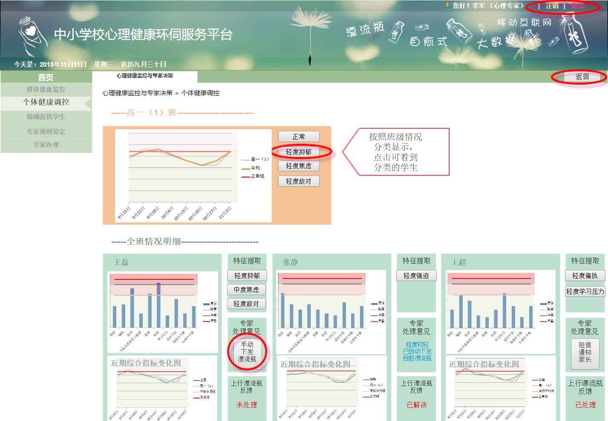

Mental Health in China and Britain
BRITAIN
BRITAIN
0. The number of psychologists is limited and students are shy
1. Chinese education is competitive
CHINA
CHINA
0. High rate of students have mental health problems
Student mental health centers are established in every school. Take my school for example. There are totally 90 classes, 5400 students. However, only about 10 psychology instructors are in the whole seminary. Therefore, not only cannot all the students mental health be counselled but the problem also cannot be regulated on immediate. In addition, Chinese students are not willing to go to the mental health centers, since they are so shy that they are afraid other students regard their mental health as a very serious problem and stayed away from them as consequence. What is more, Chinese education is competitive. For instances, there are about 700,000 senior students having the college entrance examination and only about 200 students can be admitted to the national best school, such as Peking University. Therefore, it is quite normal mental health issues occur to students’ daily life. Gradually, an increasing number of mental health problems are accumulated but not noticed or therapy, leading to students suicide.
According to the recent survey, 78% of university students reported having had a mental health problem over the past year, and 33% had had suicidal thoughts. The university students who cannot cope with the mental obstacles tend to chose to drop out, drinking and drugs, self-harm or suicide. The office for National Statistics says that 112 full-time students took their lives in 2012.Nowdays, talking to someone, consulting to University counseling services, Student-led services or online self-help multiply the methods of regulating students mental health.
the Guardian. (2017). Student mental health: a new model for universities. [online] Available at: https://www.theguardian.com/higher-education-network/2016/mar/02/student-mental-health-a-new-model-for-universities [Accessed 25 Mar. 2017].
DRAFT BOTTLE SYSTEMS
For students /
More Private
By utilizing the online " draft bottle chatting," when students feeling frustrated, depressed or stressed out, which are considered as mild mental health problem, are capable to send their issues to psychologists, mental health teacher or students in senior who might have faced the same affection before in a more secret ways.
Contacting to the students in senior
How secret is it? As we know, when receiving a draft bottle, we could acknowledge what the sender´s feeling is but it is impossible to know who he is. Similarly, given the fact that students are too shy to cope with the mental health by consulting to psychological instructors, with the selection of hiding his personal information, they can send their thoughts, mood or resent behavior to psychologists or students in senior, which could allow them to talk about their emotional issues freely.
Obtaining the experience from others
Therefore, through using the online "draft bottle chatting" downloaded on the phone, the purpose of consulting to students in senior is able to achieve, which cope with the distance or time´s arrangement-problems. In addition, "draft bottle" enables students to listen some cheerful songs, joking and experiences which is uploaded by the students in senior who face mental problems before, which are updated in every week.
For teachers /
Analysis
Questionnaire
Connection
If the data including the times of non-delivery homework and coming late for schools, consumption in school is uploaded to the "draft bottle system", it will record overall the submitting and show it in a line chart for indicating the student´s tendency. If a student has non-delivery, late for school or high consumption in school reaching a high level, which means there might be something happening on the student, the draft will automatically remain the teachers it is time to pay more attention to him. Meanwhile, the system will send the diagram which reflects his resent situation, to the student for reminding. If possible, by analyzing the daily data, system can show degree of the mental health problem.
There are marvelous questionnaires for referencing whether the students have mental health problem. However, it is impossible to spend a lot of time in it especially having a class. Therefore, the solution is teacher can sending the questionnaire to overall the students´ by "draft bottle chatting". Students can fulfill it on their phone. Only students themselves and teachers can acknowledge the results, which is a better way for noticing the students situations.
In some mental health issue, maybe it is better for the students in senior to communicate with that student. Teachers can ask a member in the "draft bottle system" senior students for assistance such as sending a message. Next, students in senior class can directly give their experience to that student in the "online draft bottle chatting", which can get closer to students.
For Psychology instructors
The function in "draft bottle system" is quite similar to the teachers. What teachers receive also transpond to the psychology instructors. In addition the standards of the degrees of the mental health problem are defined by them and questionnaires are also designed in the "draft bottle system."


Computer:Collecting and Analyzing

Phone:Testing and Self-healing
Message:Online Communication

Calling:Informing to Teachers



Are you enthusiastic or indifferent in others' impression?
Enthusiastic
Indifferent
Do you believe that life is wonderful and is worth further tours, no matter what the situation you face?
Yes
No
Do you believe karma (cause-and-effect equation) is in your life?
Yes
No
Are you afraid of karma?
Yes
No
Is it easy for you to have prejudice to others or matters.
Yes
No
Is your mood hard for others to understand because of too complicating
Yes
No
Seldom do you have sympathy
Yes
No
Is it very difficult for you to be gentle?
Yes
No
You always hold the opposite opinion which is different from a majority of people.
Yes
No
Are you confident enough for your future?
Yes
No
Sometimes, hate and scare of a crowd will engender, but you could not figure out the reason.
Yes
No
Sometimes, you are willing to do something that is against your idea because of profit.
Yes
No
Consequence:(click here to try again) With the life experiences and lessons, you are gradually not crazy about anything. However, pride is still one of your personal characters. Meanwhile, you know how to become low-key, which means you come up with an idea that it is not necessary to tell everyone your standpoints and you do not need to be praised due to your dream.
Consequence:(click here to try again) It seems like you are unsatisfied with your real life and become addicted to staying away from your life. In addition, there is a wonderful idea about your future. But it is far away from your real life. So you choose to be rebel. Not because you are overconfident, but you are lost.
Consequence:(click here to try again) You strongly believe “what exist is reasonable.” You are always positive toward your life and try your best to be persistent, but you could comfortably face the occasion which is immutable. The ideas you come up with are infinite. You are struggling to become successful to achieve real happiness.
Consequence:(click here to try again) You are trying to live within your means. So, sometimes, it is possible for you to say or act something that is improper and you are sophisticated.
INSTRUCTION: Answer the following 10 questions and probe your real "WORLD."